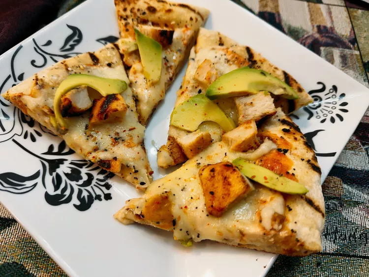

Everything Bagel Chicken Flatbread

Descirption
To make this everything bagel chicken flatbread, begin with a hot grill and prepared pizza dough. Topped with a sour cream salsa, cheese, chicken, and avocado, everything bagel seasoning ties it all together.
Ingredients
- 1 pound prepared pizza dough
- 2 tablespoons everything bagel seasoning, divided
- 1 tablespoons olive oil
- 1/4 cup sour cream
- 2 tablespoons salsa
- 1/3 cup shredded quesadilla cheese blend
- 1/4 cup crumbled cotija cheese
- 1 cooked chicken breast, diced
- 1 avocado, sliced
- 1/2 teaspoon Tajin seasoning, or to taste (optional)
Steps
- Preheat a gas grill with all burners on High for 10 to 15 minutes. Shape pizza dough and brush one side with olive oil; sprinkle with 4 teaspoons bagel seasoning. Press seasoning into dough.
- Reduce the flame on half of the grill burners to Low, to create areas of direct and indirect heat. Carefully place dough, olive oil side facing down, onto the grill over direct heat.
- Close the cover. Let dough grill until the bottom is just barely cooked and shows char marks, 1 to 3 minutes. Remove flatbread to a baking sheet, grilled side up.
- Stir together sour cream and salsa; spread mixture over grilled side of flatbread. Scatter quesadilla cheese, cotija, and chicken evenly over the top.
- Return flatbread to the indirect heat side of the grill, and grill until bread is puffed and golden brown and cheese is melted, about 3 minutes. Carefully remove to a cutting board or plate. Add avocado slices, sprinkle with remaining bagel seasoning and Tajin seasoning. Cut into wedges and serve.